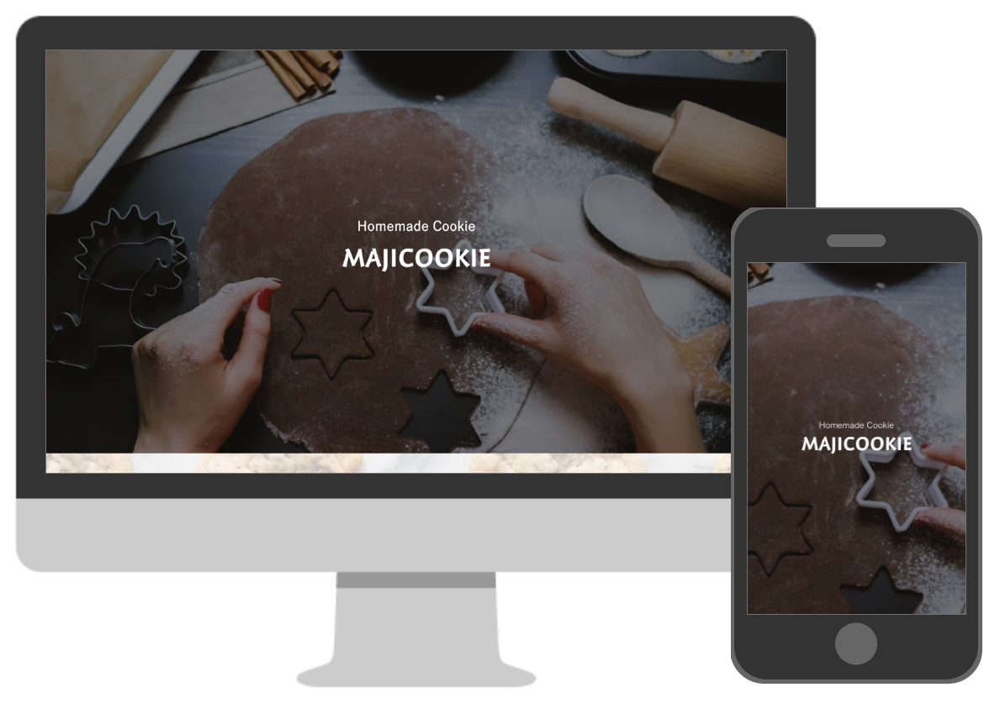

works
XDカンプコーディング|2021.7

| 作業内容 | デザインカンプからコーディング |
|---|---|
| 制作期間 | 約1週間 |
| 使用ツール | VSCode / XD |
| 使用言語 | HTML / CSS / SCSS /jQuery |
| 公開URL | https://kobato-bocchi.github.io/step4.xd/ |
XDのデザインカンプをもとにコードを書き起こし、1週間で作成しました。
中でも苦戦したのは、informationの下の写真ギャラリーの部分と、こだわりの部分です。
ギャラリーでは、追加で写真が増えてもきちんと折り返し、等間隔で並んで行くようにするコーディングに戸惑いましたが、作成を通して理解できました。
こだわりの部分では、画像とテキストを交互に並び替え、かつ縦に並べるコーディングに初めて挑戦しました。
レスポンシブも含め、綺麗に並んだのを見たときはとても感動しました。
コードの見本がなく、１からコーディングしたのが初めての経験でしたが、いい勉強になりました。
また、わずかですが自信にもつながり、勉強のモチベーションも上がりました。
完璧でない箇所がありますが、モバイルファーストを意識した実装を心がけ、メンテナンス性も考えSass/SCSSを使用しました。